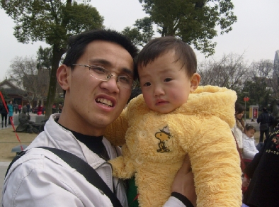

 孩子的哭声与泪水表达了他的意愿，是人类最纯洁无邪的意念。
女儿现在十八个月，已经渐懂人事，会叫爸爸妈妈爷爷奶奶，会根据人的年龄性别准确的叫出阿姨叔叔，姐姐弟弟，帮他穿衣服时知道衣服的正反，知道那个袖子穿在那个手上，会自己抓着勺子吃饭，吃饭的时候也不忘嘀咕：搛(jian,江阴本土“夹菜”的意思)，好吃！逗得大人每每哈哈大笑。真是大人的一个开心果。
问题就出在每天上班，爱人在一家大型IT企业做销售，平时忙得团团转，无瑕照看孩子，每天都是我为宝宝穿好衣服，出了房间，孩子就会自己走到厨房，指着电饭锅说"饭"！按惯例，奶奶就拿碗装了饭喂她。这时我自己也洗脸吃早餐。当孩子看到我背着包要出门时，就很不情愿的哭着喊着不让我走，每当看到孩子眼中的泪水，我的心就酸了。很想在家陪着孩子，陪她多认识一些事务，陪她开始认字，陪她玩电脑，陪她一起出去放风筝，真的，很想......
可是，我跟朋友合作的公司刚刚开始装修，我担负着公司整个技术部的责任，每天跑东跑西，实在是没有时间顾及孩子，好在我的母亲在家专业带孩子(托儿所),我把孩子托给了母亲，听着孩子的尖叫的哭声离开了家。
这几天我感慨万千，总想：如果有时间，我一定会在家多陪陪孩子。
亲爱的，爸爸妈妈都很忙，希望你能理解爸爸妈妈。爸爸妈妈希望你能快快成长，你是爸爸妈妈的宝，是爸爸妈妈的“一一”(第一，唯一)，我们怎么不爱你呢，咱不哭，咱好好学习，快快成长。。。。。。（摘自丸子的博客）